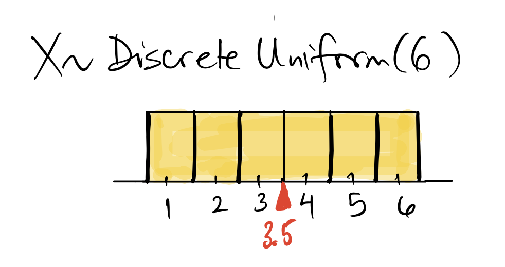
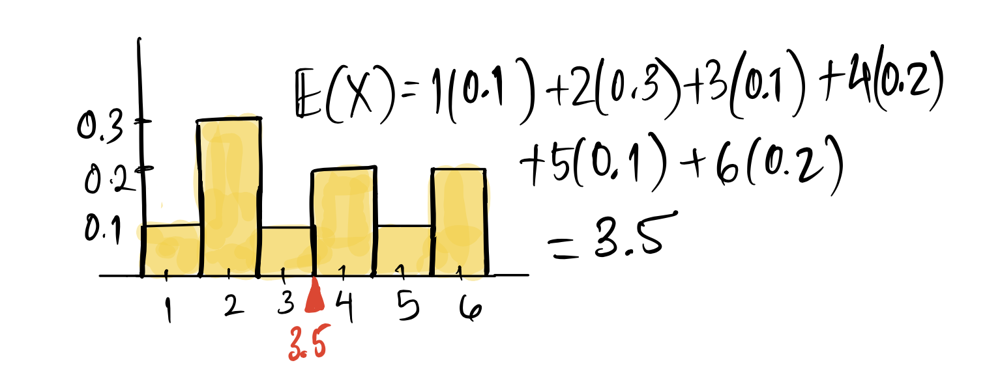
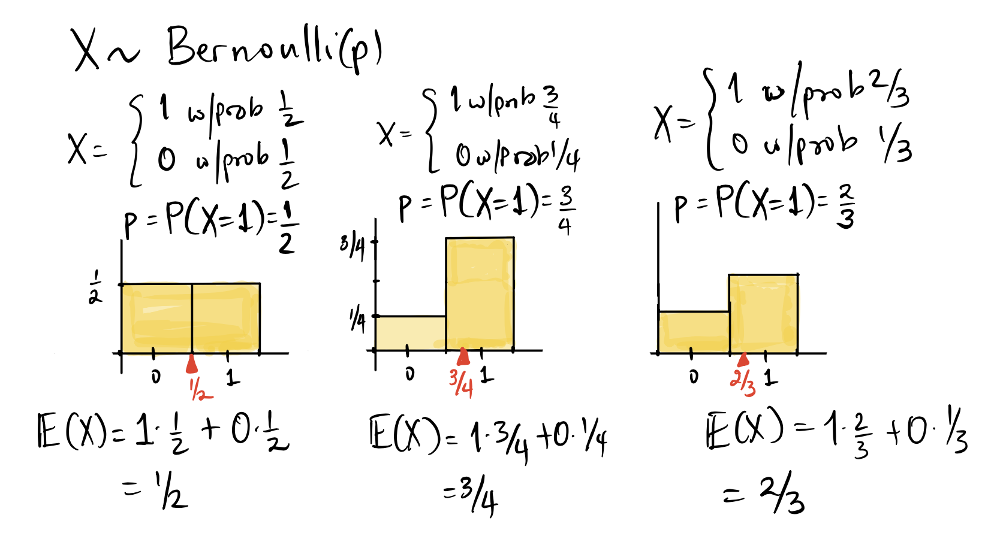

Expected value and variance of a random variable
Measuring the center and spread of a distribution
We are often interested in the average value of a random variable. We might repeat the action that generates a value of a random variable over and over again, and consider the long term average. For example, we might bet on red in roulette, and think about what our average gain would be if we play hundreds of games. Maybe we roll a die four times, record a success if we see at least one six, and repeat this process and take the average - note that we did this when we computed the proportion of times we rolled at least one 6 in 4 rolls, while simulating de Méré’s paradox. The proportion is just a special case of an average, when the random variable takes only the values \(0\) or \(1\). So you can see that we can think of the average as the value we would predict for the random variable - some sort of typical or expected value.
Expectation of a random variable
- Expected value of a random variable
- The expectation or expected value of a random variable \(X\) with pmf \(f(x)\) is denoted by \(E(X)\). It is a constant associated with the distribution, and is defined by \[ E(X) = \sum_x x \times P(X = x) = \sum_x x \times f(x) \]
You can see that \(E(X)\) is a weighted average of the possible values taken by the random variable, where each possible value is weighted by its probability.
Example: Rolls of a fair die
If \(X\) is the spots when we roll a fair six-sided die, then \(f(x) = P(x = x) = 1/6\) for \(x = 1, 2, \ldots, 6\). In this case, \(E(X) = \displaystyle \frac{1 + 2 + 3 + 4 + 5 + 6}{6} = 3.5\).
In general, if we have a discrete uniform random variable on the values \(1, 2, 3, \ldots, n\), if we had to predict \(X\), we would predict the middle of the distribution, since all the values are equally likely: (\(f(x) =\displaystyle 1/n\) for all \(x = 1, 2, 3, \ldots, n\)). Therefore the expected value of a discrete uniform random variable is \(E(X) = \displaystyle\frac{n+1}{2},\) or just the usual average of \(1, 2, 3, \ldots, n\).

Example: Rolls of an unfair die
What happens if all the faces are not equally likely? Consider the following scenario: let \(X\) be the result of rolling a weird six-sided die, which has that the probability of rolling a 4 or 6 is double that of rolling any of the odd numbers (\(P(X=4) = P(X = 6) = 2\times P(X =1)\) etc), and the probability of rolling a 2 is three times that of rolling any of the odd numbers (\(P(X=2) = 3\times P(X =1)\) etc). What is the pmf of \(X\)? See if you can work it out! Remember that the probabilities have to add to 1.
Check your answer
Writing it as a piecewise function:
\[ P(X=x) = f(x) = \begin{cases} \frac{1}{10} = 0.1,\: \text{for}\, x = 1, 3, 5 \\ \frac{2}{10} = 0.2, \:, \text{for}\, x = 4, 6 \\ \frac{3}{10} = 0.3, \: \text{for}\, x = 2 \end{cases} \] In tabular form:
| \(x\) | \(f(x) = P(X = x)\) |
|---|---|
| \(1\) | \(0.1\) |
| \(2\) | \(0.3\) |
| \(3\) | \(0.1\) |
| \(4\) | \(0.2\) |
| \(5\) | \(0.1\) |
| \(6\) | \(0.2\) |
Now see if you can figure out the weighted average or the expected value, using the definition. Remember, multiply each value by its probability (\(x\times f(x)\)) and then add them all up. You should be adding up 6 terms.
Check your answer
\[ \begin{aligned} E(X) &= \sum_x x \times f(x) \\ &= 1 \times 0.1 + 2 \times 0.3 + 3 \times 0.1 + 4 \times 0.2 + 5 \times 0.1 + 6 \times 0.2\\ &= 3.5 \\ \end{aligned} \]
Here is a picture of the probability histogram with the expected value marked in red.

Notice that the expected value was the same for both dice - the fair as well as unfair dice. This illustrates an important way in which the expected value of a random variable is just like the average of a list of numbers. It gives us some information about the distribution since we see the ``typical’’ value, but not that much information. Two random variables with very different distributions can have the same expected value.
Example: Bernoulli random variables
Recall that a Bernoulli (\(p\)) random variable is the special case of a binomial random variable when the parameter \(n=1\). This random variable takes the value \(1\) with probability \(p\) and \(0\) with probability \(1-p\). Then: \[ E(X) = 1 \times p + 0 \times (1-p) = p\] The expected value of a Bernoulli(\(p\)) random variable is therefore just \(p\). In particular, if we toss a coin and define \(X\) to be the number of heads, then the expected value of \(X\) is the probability that the coin lands heads.

In all the figures above, note the red triangle marking the expected value. If you imagine the probability histogram to be a thin lamina - like a thin sheet of metal cut in the shape of the probability histogram, you can imagine the expected value as a “balancing point” - the point where the lamina would balance. It is the center of mass for the probability distribution. The expected value for a random variable is analogous to the average for sample data. Other terms that we use for the expected value of a random variable are expectation and mean. These can be used interchangeably.
Exercise: Compute the expectation of the random variable whose distribution is shown below:
Let \(X\) be a random variable such that
\[ X = \begin{cases} 1\: \text{with prob}\, 4/15\\ 2 \: \text{with prob}\, 7/30 \\ 0 \: \text{with prob}\, 1/3 \\ -1 \: \text{with prob} \, 1/6 \end{cases} \]
Check your answer
\[ \begin{aligned} E(X) &= 1 \times \frac{4}{15} + 2 \times \frac{7}{30} + 0 \times \frac{1}{3} + (-1) \times \frac{1}{6} \\ &= \frac{1 \times 8 + 2 \times 7 + 0 \times 10 + (-1) \times 5}{30} \\ &= \frac{8 + 14 + 0 - 5}{30} \\ &= \frac{17}{30} = 0.5666667 \end{aligned} \]Now we have the definition, let’s look at what we can do with it. Most of the properties below are what you would expect when you have a sum, since recall that you can pull constants in and out of sums, for example \(2x + 2y = 2(x+y)\).
Properties of expectation
- 1. Expected value of a constant
- The expected value of a constant is just the constant itself. Let \(c\) be any constant. The probability mass function can be considered to be \(f(c) = 1\). Then \[E(c) = c \cdot f(c) = c \]
- 2. Constant multiple of a random variable
- If \(c\) is a constant, and \(X\) is a random variable with pmf \(f(x)\), then we can consider \(cX\) to be the random variable that takes the value \(cx\) when \(X\) takes the value \(x\), so \(f(cx) = f(x)\). Therefore, \[ E(cX) = \sum_x cx \cdot f(x) = c \sum_x x \cdot f(x) = c\cdot E(X) \]
- 3. Additivity of expectation
- Let \(X\) and \(Y\) be two random variables, and consider their sum \(X + Y\). Then, \[ E(X + Y) = E(X) + E(Y)\] This is true regardless of whether \(X\) and \(Y\) are independent or not (we will call random variables independent when the values of one don’t affect the probabilities of the other, like coin tosses and die rolls).
- 4. Linearity of expectation
- Putting the previous two properties together, we get \[ E(aX + bY) = E(aX) + E(bY) = a\cdot E(X) +b \cdot E(Y)\]
The next property is very important and a little tricky, so read it carefully. When we have a function of \(X\), such as its square, and we want the mean of that function, we have to be careful. We would square the values of \(X\), but we would not square the probabilities. This is important! We never touch \(f(x)\).
- 5. Expectation of a function of a random variable
- Suppose \(Y = g(X)\) is a function of the random variable \(X\). Then \(Y\) is also a random variable taking values \(y = g(x)\), and the probabilities are just the probabilities associated with \(x\). Then the expected value of \(Y\) is given by: \[ E(Y) = E(g(X)) = \sum_x g(x) \times f(x) = \sum_x g(x) \times P(X=x) \]
Example: Expectation of the square of a random variable
Let \(X\) be a random variable with the following probability distribution:
| \(x\) | \(P(X = x)\) |
|---|---|
| \(-2\) | \(0.2\) |
| \(-1\) | \(0.1\) |
| \(0\) | \(0.2\) |
| \(1\) | \(0.3\) |
| \(3\) | \(0.2\) |
Let’s first add a column with the product \(x\times P(X=x)\):
| \(x\) | \(P(X = x)\) | \(x\times P(X=x)\) |
|---|---|---|
| \(-2\) | \(0.2\) | \(-0.4\) |
| \(-1\) | \(0.1\) | \(-0.1\) |
| \(0\) | \(0.2\) | \(0\) |
| \(1\) | \(0.3\) | \(0.3\) |
| \(3\) | \(0.2\) | \(0.6\) |
Then we sum the third column to get \(E(X) = -0.4 -0.1 + 0 + 0.3 + 0.6 =\) 0.4.
Let’s do the same for the random variable \(Y = g(X) = X^2\). Add two columns to the original table, one with the values of \(y = g(x)\), and one with \(g(x)f(x) = g(x)P(X=x)\):
| \(x\) | \(P(X = x)\) | \(y = x^2\) | \(g(x)\times P(X=x)\) |
|---|---|---|---|
| \(-2\) | \(0.2\) | \(4\) | \(0.8\) |
| \(-1\) | \(0.1\) | \(1\) | \(0.1\) |
| \(0\) | \(0.2\) | \(0\) | \(0\) |
| \(1\) | \(0.3\) | \(1\) | \(0.3\) |
| \(3\) | \(0.2\) | \(9\) | \(1.8\) |
Summing the last column we get \(E(Y) = 0.8 + 0.1 + 0 + 0.3 + 1.8 =\) 3.
Now with these tools aka properties of expectation in hand, let’s compute the expected values of a binomial random variable.
Special distributions
We use a variety of ways to describe the expected value of a random variable. We might use the phrases “mean of the random variable \(X\)” or “mean of the distribution” or “expected value of the random variable \(X\)” and they all refer to the same quantity \(E(X)\) which describes, in a sense, the center of mass of the probability distribution of \(X\). Now we will write down the mean of the named distributions we have defined. We have already computed the mean of two special distributions, the discrete uniform and the Bernoulli.
Binomial Distribution
Let \(X\sim Bin(n, p)\). Recall that \(X\) counts the number of successes in \(n\) trials, where the probability of success on each trial is \(p\). We can define \(n\) Bernoulli (\(p\)) random variables \(X_1, X_2, \ldots, X_n\) where \(X_k = 1\) with probability \(p\), that is, \(X_k\) is 1 if the \(k\)th trial is a success. We see that the binomial random variable \(X\) can be written as a sum of these \(n\) Bernoulli random variables:
\[ X = X_1 + X_2 + \ldots + X_n \]
The expected value of \(X_k\) is \(E(X_k) = p\) for each \(k\), so using the additivity of expectation, we get
\[ \begin{aligned} E(X) &= E( X_1 + X_2 + \ldots + X_n) \\ &= E(X_1) + E(X_2) + \ldots + E(X_n) \\ &= p + p + \ldots + p\\ &= np \end{aligned} \]
Therefore, if \(X\sim Bin(n, p)\), then \(E(X) = np\). This intuitively makes sense: if I toss a fair coin 100 times, I expect to see about \(50\) heads. This is a very neat trick to compute the expected value of a binomial random variable because you can imagine that computing the expected value using the formula \(\displaystyle \sum_x x \cdot f(x)\) would be very messy and difficult. Using Bernoulli random variables allowed us to easily calculate the expected value of a binomial random variable.
Hypergeometric Distribution
It turns out that whether we sample with or without replacement does not matter, and the expected value of a hypergeometric distribution is just the sample size times the number of successes in the population to begin with, so if \(X \sim HG(N, G, n)\), then: \[ E(X) = n \times \frac{G}{N} \] You do not need to know how to derive the expectation for a hypergeometric random variable.
Poisson Distribution
The expected value of a Poisson random variable has a rather nice derivation. It is enough to know that if \(X \sim Pois(\lambda)\), then
\[ E(X) = \lambda \]
This makes intuitive sense, if we think of the Poisson random variable as approximating a binomial random variable that has large \(n\) and tiny \(p\), with \(\lambda = np\). Think coin tosses with a very low chance of heads, we still expect to see about \(np\) heads on average. You are not expected to know how to derive the expected value of a Poisson random variable, but if you know about Taylor series, you can expand the following to see it.
Derivation of \(E(X) = \lambda\)
\[ \begin{aligned} E(X) &= \sum_{k=0}^\infty k\times P(X = k)\\ &= \sum_{k=0}^\infty k \times e^{-\lambda}\frac{\lambda^k}{k!}\\ &= \sum_{k=1}^\infty k \times e^{-\lambda}\frac{\lambda^k}{k!}\\ &= e^{-\lambda}\lambda \, \times \sum_{k=1}^\infty \frac{\lambda^{k-1}}{(k-1)!} \\ &= e^{-\lambda}\lambda \, \times \sum_{j=0}^\infty \frac{\lambda^j}{j!} \\ &= e^{-\lambda}\lambda \times e^{\lambda} \\ &= \lambda \end{aligned} \]
In the third line, the lower limit for the sum changes because the first term is \(0\) since \(k = 0\).
In the fourth line, we take out \(e^{-\lambda}\) and \(\lambda\), and cancel the \(k\) in \(k!\).
In the fifth line, we rewrite the lower limit of the sum and the power of \(\lambda\) to be \(j\) which begins at \(0\).
In the fifth line, notice that sum is just the Maclaurin series of $ e^{}$.
Now, let’s look at another constant associated with the random variable.
Variance and standard deviation of a random variable
When we looked at averages of data, we realized that computing measures of center was insufficient to give us a picture of the distribution. We needed to know how the data distribution spread out about its center, and this idea holds true for probability distributions as well. We want a number that describes how far from \(E(X)\) the values of \(X\) typically fall, similar to the standard deviation for a list of numbers.
- Variance of a random variable
- Define \(\mu = E(X)\), and define the function \(g(X) = (X-\mu)^2\), which describes the square of the distance of each value of \(X\) from its mean, or the squared deviation of \(X\) from its mean. Then the variance of \(X\), written as \(Var(X)\) is given by: \[ Var(X) = E(g(X)) = E\left[(X-\mu)^2\right] \]
The problem with \(Var(X)\) is that the units are squared, so just as we did for the sample variance, we will take the square root of the variance.
- Standard deviation of a random variable
- The square root of \(Var(X)\) is called the standard deviation of \(X\):
\[ SD(X) = \sqrt{Var(X)} \]
\(SD(X)\) is a “give or take” number attached to the mean \(E(X)\), so we can say that a ``typical’’ value of \(X\) is about \(\mu\), give or take one standard deviation (the value of \(SD(X)\)). Note that \(SD(X)\) is a non-negative number.
Example: Rolls of a weighted (unfair) die
Recall the example in which we roll an unfair die, and the probability mass function \(f(x)\) was given by: \[ P(X=x) = f(x) = \begin{cases} 0.1,\: \text{for}\, x = 1, 3, 5 \\ 0.2, \:, \text{for}\, x = 4, 6 \\ 0.3, \: \text{for}\, x = 2 \end{cases} \]
We had computed \(E(X)=\mu = 3.5\). What about \(Var(X)\)? Let’s write out the table, and add a column for \(g(x) = (x-3.5)^2\).
| \(x\) | \(P(X = x)\) | \(g(x) = (x - 3.5)^2\) | \(g(x)\times P(X=x)\) |
|---|---|---|---|
| \(1\) | \(0.1\) | \(6.25\) | \(0.625\) |
| \(2\) | \(0.3\) | \(2.25\) | \(0.675\) |
| \(3\) | \(0.1\) | \(0.25\) | \(0.025\) |
| \(4\) | \(0.2\) | \(0.25\) | \(0.05\) |
| \(5\) | \(0.1\) | \(2.25\) | \(0.225\) |
| \(6\) | \(0.2\) | \(6.25\) | \(1.250\) |
\(E(g(X)) = \sum_x g(x)\cdot P(X=x) =\) 2.85
Therefore the standard deviation of \(X = SD(X)\) is the square root of the variance, so about 1.688.
Example: Rolls of a fair die
We have already computed that the expected value of the random variable \(X = 3.5\) where \(X\) is the result of rolling a fair die. What are \(Var(X)\) and \(SD(X)\)?
Check your answer
\(Var(X) = \sum_x (x-3.5)^2 \cdot P(X=x) =\) 2.917. \(SD(X) =\) 1.708.
Why do you think that \(Var(X)\) and \(SD(X)\) are greater when \(X\) is the result of rolling the fair die than when \(X\) is the result of rolling the unfair die? (Hint: think about the probability distributions.)
Computational formula for \(Var(X)\)
To compute variance, we usually use a nice shortcut formula:
\[ Var(X) = E\left(X^2\right) - \mu^2 \]
Properties of variance and standard deviation
- 1. The variance of a constant is \(0\)
- Remember that the variance measures how spread out the values of \(X\) are about the mean. A constant doesn’t spread out at all, so it makes sense that the variance is \(0\).
Let’s confirm this. Let \(X\) be a random variable such that \(X = c\) with \(f(c) = 1\) for some real number \(c\). (This means that \(X\) takes the value \(c\) with probability 1, that is, with certainty.)
\[ Var(X) = E(X^2) - \mu^2 = E(c^2) - c^2 = c^2 - c^2 = 0. \] Note that \(E(c^2) = c^2\) as \(c^2\) is a constant. Thus we have that \(SD(c) = 0\).
- 2. The variance of a constant multiple of \(X\): \(Var(cX) = c^2 Var(X)\)
- Note that \(E(cX) = c\mu\) by the properties of expectation. Thus we have (using the short cut formula):
\[ \begin{aligned} Var(cX) &= E((cX)^2) - (c\mu)^2 \\ &= E(c^2 X^2) - c^2 \mu^2 \\ &= c^2E(X^2) - c^2\mu^2\\ &= c^2\left(E(X^2) - \mu^2 \right) \\ &= c^2 Var(X) \end{aligned} \]
Thus, \(SD(cX) = \sqrt{Var(cX)} = \sqrt{c^2 Var(X)} = \lvert c \rvert SD(X).\) (\(SD(X) \ge 0\))
- 3. The variance of \(X\) is unchanged by adding a constant
- If we add a constant to \(X\), the spread of the distribution does not change, only its center changes. Let \(c\) be a real number. Then we have:
\[ Var(X+c) = Var(X) \]
Check your answer
\[ \begin{aligned} Var(X +c) &= E\left(\left(X+c\right)^2\right) - \left(E\left(X+c\right)\right)^2\\ &= E\left(X^2 + 2cX + c^2\right) - \left((E(X))^2 + 2cE(X) + c^2\right) \\ &= E\left(X^2\right) + 2cE(X) + c^2 - \left(E(X)\right)^2 - 2cE(X) - c^2\\ &= E\left(X^2\right) - \left(E(X)\right)^2 \\ &= Var(X) \end{aligned} \]
- 4. Additivity of variance
- If \(X\) and \(Y\) are independent random variables, that is the events \(X = x\) and \(Y = y\) are independent for all values of \(x\) and \(y\), we have that:
\[ Var(X + Y) = Var(X) + Var(Y) \text{ and } Var(X - Y) = Var(X) + Var(Y) \]
Note that in this case, \(Var(X + Y) = Var(X) + Var(Y)\) implies that \(SD(X +Y) = \sqrt{Var(X) + Var(Y)}\) - square roots and therefore SD’s are not additive.
Example: Box of tickets
Consider the box with the following \(30\) tickets:
\(8\) tickets marked \(\fbox{1}\), \(7\) tickets marked \(\fbox{2}\), \(10\) tickets marked \(\fbox{0}\), and \(5\) tickets marked \(\fbox{-1}\).
Let \(X\) be the value of a single draw from this box, if we shuffle the tickets and draw one ticket at random. What is the probability distribution of \(X\)? What is \(E(X)\), rounded to 3 decimal places?
Notice that the average of the tickets in the box is 0.567 which is the same as \(E(X)\)!
What about the variance of \(X\)?
\[ \begin{aligned} Var(x) &= E\left[ ( X - \mu)^2 \right] \\ &= \left( \frac{8}{30}\times (1-0.567)^2 + \frac{7}{30} \times (2-0.567)^2 \right. \\ &+ \left. \frac{10}{30} \times (0-0.567)^2 + \frac{5}{30} \times (-1 - 0.567)^2 \right) \\ &\approx 1.045\\ \end{aligned} \] The sample variance of the tickets in the box is a bit more than 1.045. This is because we use \(n-1\) in the denominator of sample variance and sample sd, rather than \(n\).
The standard deviation \(SD(X) = \sqrt{Var(X)} =\) 1.023.
Bernoulli random variables
Let \(X\) be a Bernoulli (\(p\)) random variable. We know that \(E(X) = \mu = p\). If we compute \(E(X^2)\), we get that \(E(X^2) = p\). (Make sure you know how to compute \(E(X^2)\).) Therefore we have that: \[ Var(X) = E(X^2) - \mu^2 = p - p^2 = p(1-p). \]
Binomial random variables
We use the same method as we did to compute the expectation of \(X\sim Bin(n,p)\). We will write \(X\) as a sum of independent Bernoulli random variables: \[ X = X_1 + X_2 + \ldots + X_n\] where each \(X_k \sim\) Bernoulli(\(p\)). Since the \(X_k\) are results of independent trials (by the definition of the binomial distribution), we have: \[Var(X) = Var(X_1) + Var(X_2) + \ldots + Var(X_n) = np(1-p).\] Therefore, \(SD(X) = \sqrt{np(1-p)}\)
Poisson random variables
Computing the variance of a Poisson random variable is more complicated than computing its expectation, so we will just state the variance as a fact. Let \(X \sim Poisson(\lambda)\). Then \[ Var(X) = \lambda. \]
Summary
We defined the expected value or the mean of a discrete random variable and listed the properties of expectation including linearity and additivity.
We defined the variance and standard deviation of a random variable. Both expectation and variance (and therefore standard deviation) are constants associated to the distribution of the random variable. The variance is more convenient than the sd for computation because it doesn’t have square roots. However, the units are squared, so you have to be careful while interpreting the variance. We discussed the properties of variance and standard deviation.
We wrote down the expected values and variance for various special random variables.